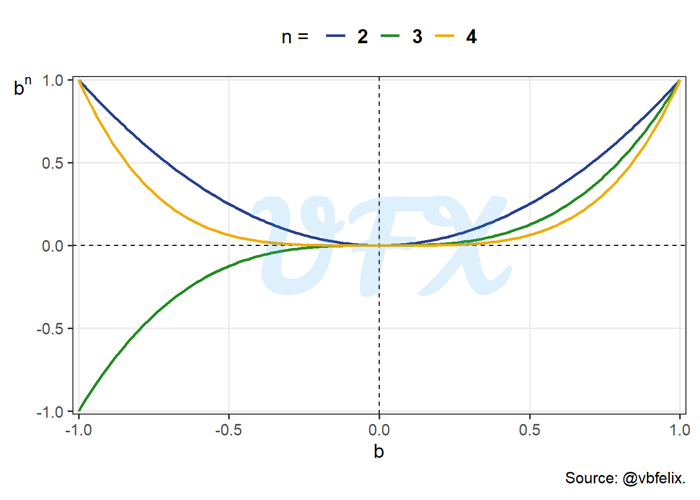
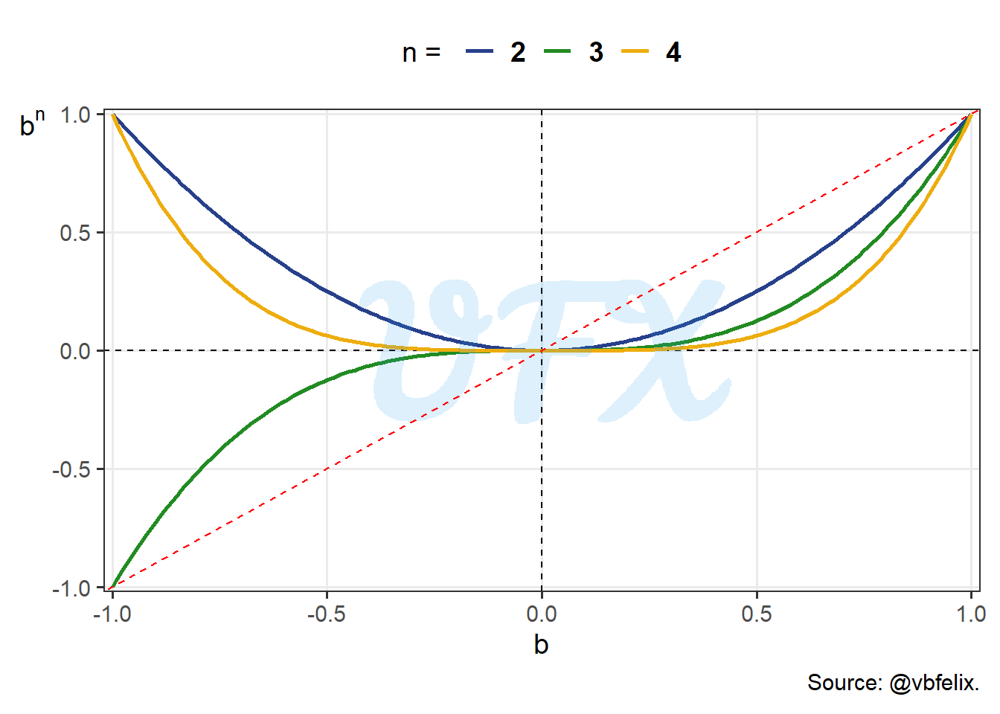
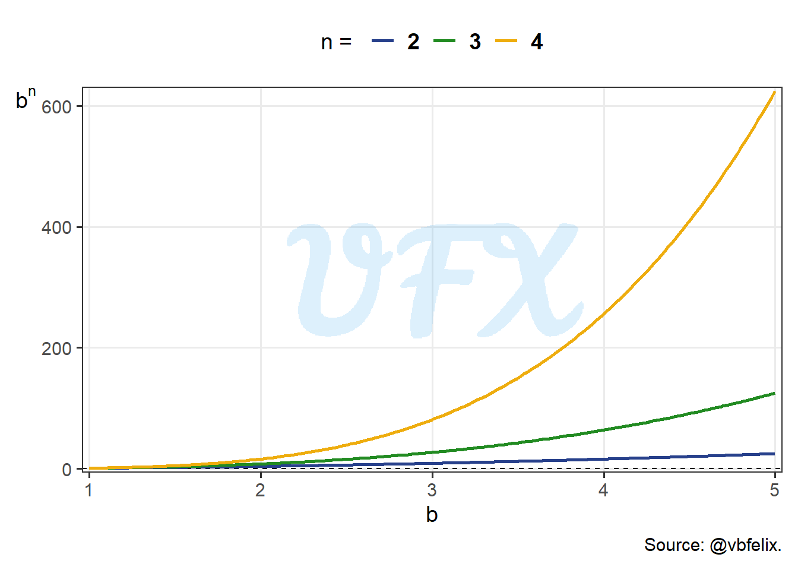
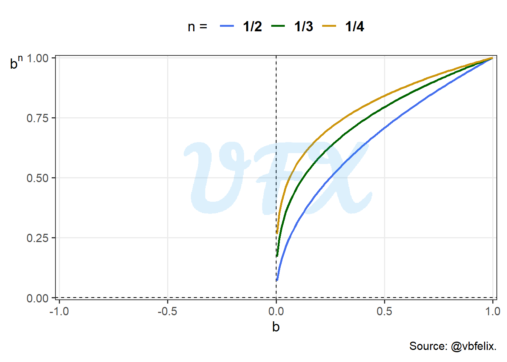
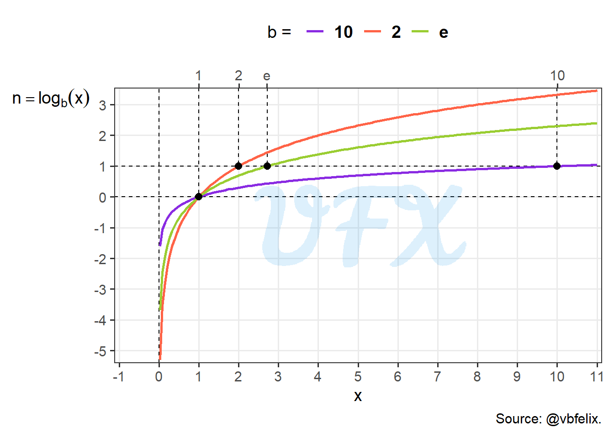
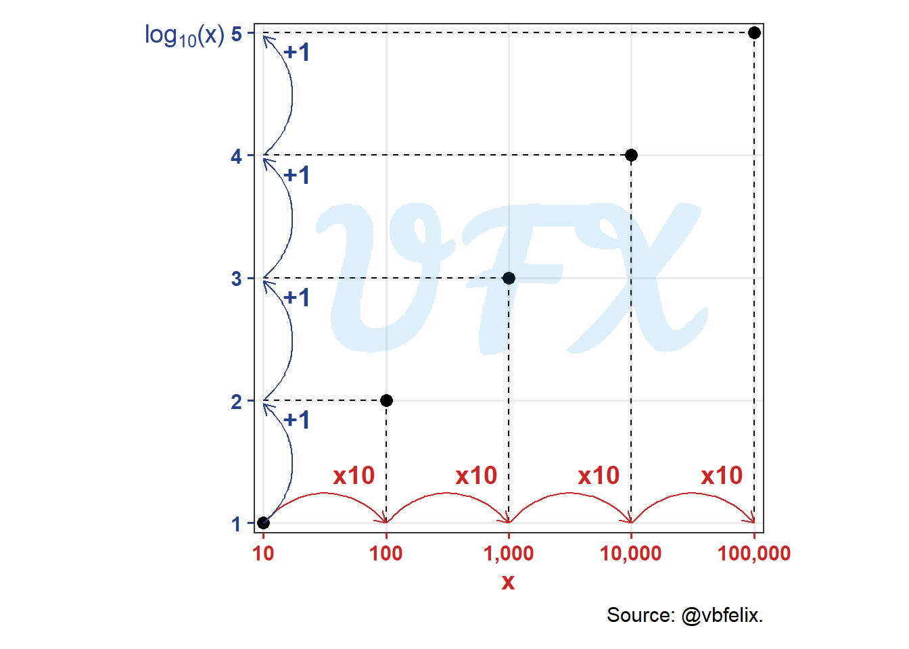
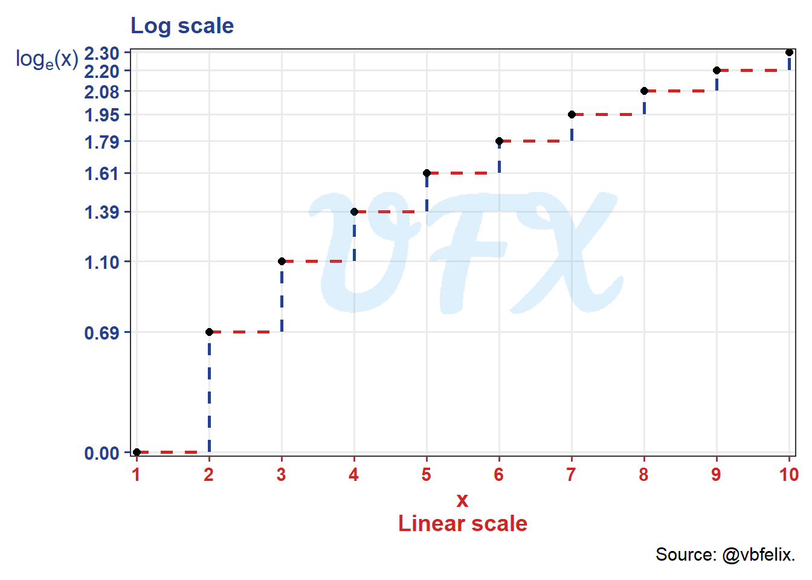
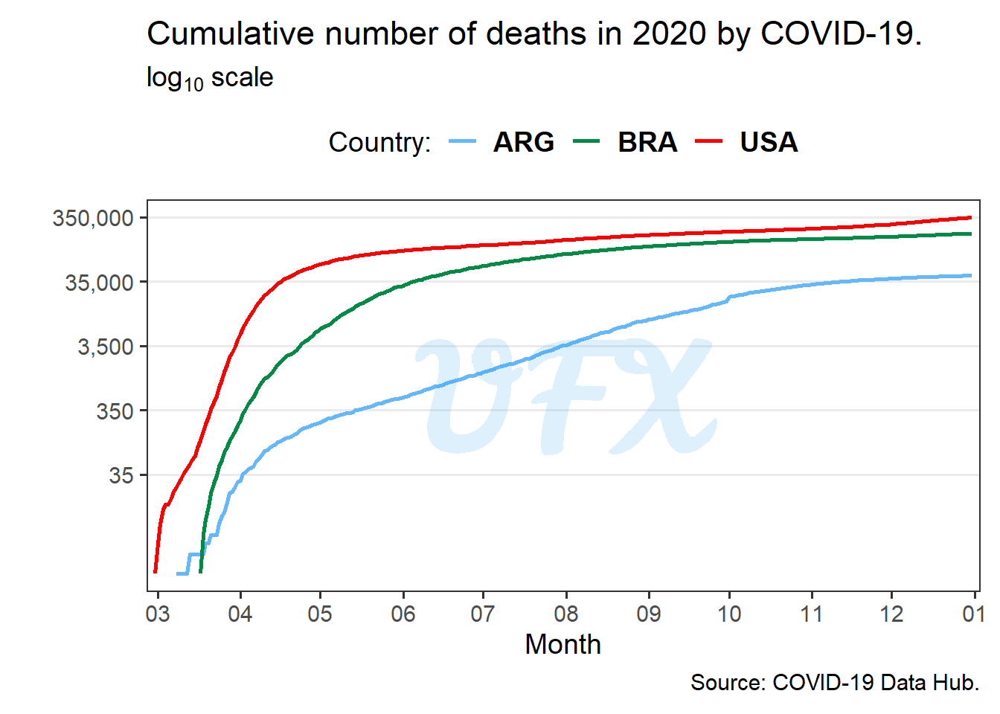

In this post of the series Intro to, I’ll give an introduction to the logarithmic scale, and how useful it can be in data visualization.
Context
Exponentiation
When learning math, we usually start by the fundamental arithmetic operations:
Addiction and Subtraction;
Multiplication and Division.
After the basics, the next step is the exponentiation, we will look at how it works, which is essentially a two-number math operation, where:
\(b\) is the base, the value that will be exponiented;
\(n\) is the exponent, the value that the base will be raised by the power of.
Then, we say that \(b\) is raised to the power of \(n\), meaning that:
\[ b^n = b_{[1]} \times b_{[2]} \times ... \times b_{[n-1]} \times b_{[n]} = x, \quad n \in \mathbb{Z}^{++}. \tag{1}\]
As stated in the Equation 1 \(b\) is multiplied by itself \(n\) times, and this property of the exponentiation is given for any positive integer \(n\).
So, let’s say we want to exponentiate the number 10 to the power of 3, that is:
\[ 10^3 = 10\times 10 \times 10 = 100 \times 10 = 1000. \tag{2}\]
In the example above, 3 is the exponent and 10 is the base, resulting in 1,000.
Next, let’s understand how the exponential function works in general. For the first scenario, we will use 3 exponents (2, 3 and 4) applied to a sequence of bases from -1 to 1.

Looking at the figure above we can see some interesting behaviors:
- \(b^n = 0\) when \(b = 0\);
- \(b^n = 1\) when \(b = 1\);
- \(b^n = 1\) when \(b = -1\) and \(n\) is even;
- \(b^n = -1\) when \(b = -1\) and \(n\) is odd;
- \(b^n > 0\) when \(n\) is even, since multiplying an negative value for an even number of times yields a positive result;
- \(b^n > b\) when \(1 > b > 0\), to help our visualization of this behavior, we will plot a identity line dashed with the color red, i.e., \(b^n = b\).

We see that the values are below the line for positives bases, hence:
\[ 1 > b > 0 \longrightarrow b^n > b, \quad n \in \mathbb{Z}^{++}. \tag{3}\]
But let’s keep in mind that until now we worked with bases between -1 and 1, will see how the exponentiation behavior for \(b >= 1\) next.

Looking at values > 1 for our base, we see how fast the results of \(b^n\) grows for a higher \(n\).
After seeing how the behavior is for differents bases, we will do the same for the exponents. As we applied integer positive values for our exponents in the examples before, let’s see how fractional exponents behavior.

We can see that for negatives values of \(b\) there are not defined values of \(b^n\), but why is that?
\[ b^{\frac{n}{m}} = (b^n)^{\frac{1}{m}} = \sqrt[m]{b^n}. \tag{4}\]
In the Equation 4 we look how a fractional exponent is actually the \(m\)th root of \(b^n\), so if \(m\) is even, there would be no real solution, since a even root of a negative value is not defined for real numbers.
After understanding the basics of the the exponentiation we can jump to the inverse operation, the logarithm (\(\log\)).
Logarithm
So, let’s see how \(\log\) works, since it is the inverse of the exponentiation, we can write it as:
\[ \log_b(x) = n \longleftrightarrow b^n = x \tag{5}\]
As stated in the equation above, the \(\log\) function gives what is the exponent (\(n\)) we have to raise our base (\(b\)) to result in \(x\).
Applying this logic, we can see the Equation 2 as:
\[ \log_{10}(1000) = 3. \tag{6}\]
So the \(\log\) is which number 10 has to be exponiented to result in 1,000, then we can easily expand this to show other results:
| \(\log_{10}(x)\) | \(x\) |
|---|---|
| -5 | 0.00001 |
| -4 | 0.0001 |
| -3 | 0.001 |
| -2 | 0.01 |
| -1 | 0.1 |
| 0 | 1 |
| 1 | 10 |
| 2 | 100 |
| 3 | 1000 |
| 4 | 10,000 |
| 5 | 100,000 |
In the table above we see thjat the result of the \(\log_{10}(x)\) increase 1 unit as the value in \(x\) is multiplied by 10.
Just as we did with the exponentiation, let’s see how the \(\log\) behavior, so we will apply the function to a \(x\) varying from -1 to 11 with three different bases (2, \(\mathcal{e}\) and 10).

Looking at the figure above we can see some interesting behaviors:
- \(n\) is nonexistent when \(x < 0\), as we saw earlier for somes cases in the exponentiation would result in a undefined number;
- \(n\) is equal to 1 when \(b = x\);
- \(n\) is equal to 0 when \(x = 0\), no matter what base;
- \(n\) is negative when \(x < 0\).
Before exploring more of the logarithm properties, you can be asking what it is the \(\mathcal{e}\) used in the example before?
Natural logarithm
This logarithm is a special case, where the base of the \(\log\) is the number \(\mathcal{e}\), also known as Euler’s number or Napier’s constant, defined by:
\[ \mathcal{e} = \sum_{n = 0}^{\infty}\frac{1}{n!} = \frac{1}{1} + \frac{1}{1\times2}+ \frac{1}{1\times2\times3} + ... \approx 2.718282. \tag{7}\]
So the natural logarithm can be written as:
\[ \log_{\mathcal{e}}(x) = \mathrm{ln}(x). \tag{8}\]
Properties
The \(\log\) function has many properties that helps us in many situations, let’s see the main properties.
Product
The first property is that the \(\log\) of the products of \(x\) and \(y\) is the same as the sum of the \(\log\)’s of \(x\) and \(y\), that is:
\[ \log_b(xy) = \log_b(x) + \log_b(y). \tag{9}\]
To see that, let’s use the Equation 5 and define a second equation as:
\[ \log_b(y) = m \longleftrightarrow y = b^m. \tag{10}\]
By applying the product property of the exponentiation we have that:
\[ xy = b^n \ b^ m = b^{(n+m)}. \tag{11}\]
Now, if we use the Equation 11 to Equation 9, we result in:
\[ \begin{align} \log_b(xy) &= \log_b(b^{(n + m)}) \\ &= n + m \\ &= \log_b(x) + \log_b(y). \end{align} \tag{12}\]
Quotient
The second property is that the \(\log\) of the division of \(x\) and \(y\) is the same as the subtraction of the \(\log\)’s of \(x\) and \(y\), that is:
\[ \log_b\left(\frac{x}{y}\right) = \log_b(x) - \log_b(y). \tag{13}\]
Using the same definitions of Equation 5 and Equation 10, we have that:
\[ \frac{x}{y} = \frac{b^n}{b^m} = b^{n-m}, \tag{14}\]
if we use the Equation 14 to Equation 13, we result in:
\[ \begin{align} \log_b\left(\frac{x}{y}\right) &= \log_b(b^{n-m}) \\ &= n-m \\ &= \log_b(x) - \log_b(y). \end{align} \tag{15}\]
Power
The third property is that the \(\log\) of a value \(x\) raised by a power \(a\), is equal to the product of \(a\) to the \(\log\) of \(x\).
\[ \log_b(x^a) = a\log_b(x). \tag{16}\]
Expanding the definition in Equation 5:
\[ \log_b(x) = n \longrightarrow x = b^n \longrightarrow x^a = (b^{n})^a = b^{an}, \tag{17}\]
Now, if we use the definition in the Equation 16, we have that:
\[ \begin{align} \log_b(x^a) &= \log_b(b^{an}) \\ &= an \\ &= a\log_b(x). \end{align} \tag{18}\]
Data Visualization
Finally, we will see an application of the \(\log\) scale directly to data visualization, first we will see how those math properties appears in a graph.

Since the \(\log\) is the inverse of the exponentation, we show here in this graph where we plot the cumulative product of a vector of size 5 with number 10 in the x axis versus the respective logarithm, with base 10, in the y axis.
In the x axis as the data multiple by 10 the result of the \(\log\) increase by 1 in the y axis, so with that we can showcase data that:
- Have a multiplicative effect;
- Outliers;
- Groups with different magnitudes.
Let’s see a simple example of how the change in scale can easily modify our perspective.

In the figure above we just apply the \(\log_e\) in a sequence from 1 to 10, we see in the x axis (linear scale) that the distance between the values are equidistant, but for the y axis the distances shorten for higher values, the reasoning for that is because the result of the \(\log\) is the exponent to reach that specific value \(x\), so different from addition, a minimal increase can cause a major difference in our result.
With that, the effect of a minimal increase in the exponent has a huge implication in the resultant values, for example, going from 1 to 2 requires a 0.69 unit increase in the exponent, but to go from 9 to 10 required a difference of just 0.10 in the exponent.
So the \(\log\) scale can be very helpful to “compress” data with a huge magnitude, making possible to see behaviors that were “squished” by the linear scale.
Real data application
We will look at the number of deaths from COVID–19 (Guidotti and Ardia 2020) of Argentina (ARG), Brazil (BRA) and the United States of America (USA), in 2020.
As a disclaimer, the goal of this analysis is to demonstrate how the logarithm can be useful, not to gain any insight into how COVID actually behaved in these countries, as that would necessitate more in-depth research.

Looking at the figure above we see that number of deaths are bigger in USA, Brazil and lastly Argentina, that is no surprise since it follows the same order of population size.
So if we want to compare the behavior of the countries it can be hard, for example, Argentina has less deaths and the curve become “squished”, making it hard to see what really happened.
Since we have data with different magnitudes, we can apply the logarithm.

After the application, we can see each country’s behavior more clearly. For example, the number of deaths in the United States began earlier and slowed down faster than in Brazil, whereas Argentina had a steady number of deaths until November, when it began to “stabilize”.